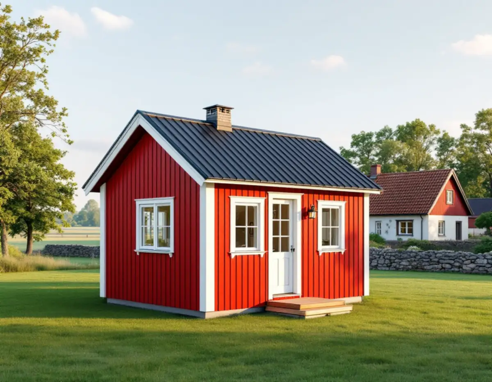
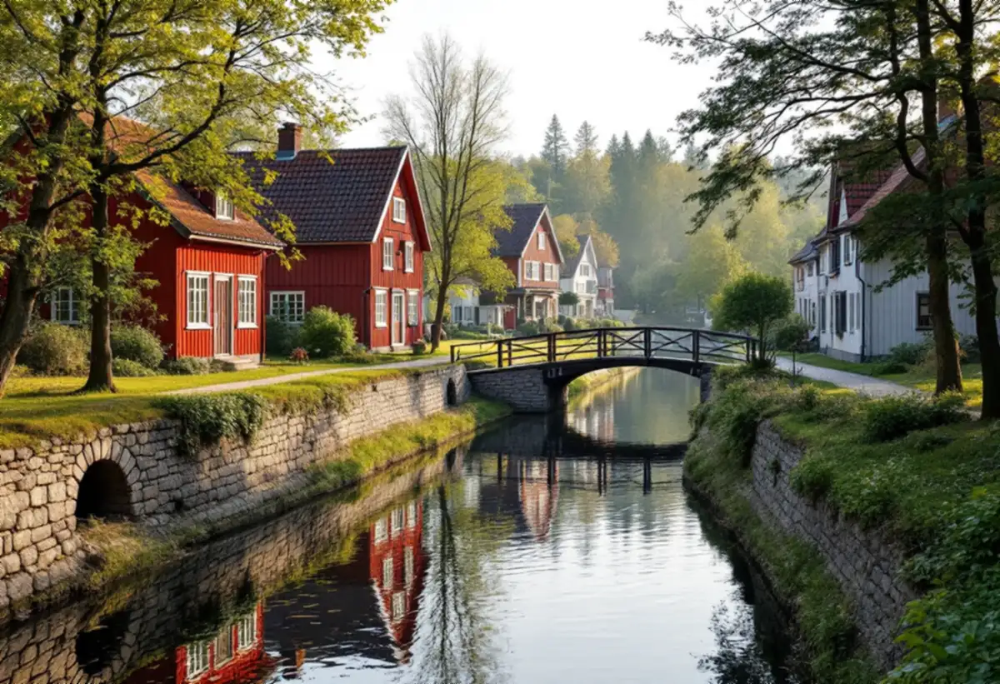
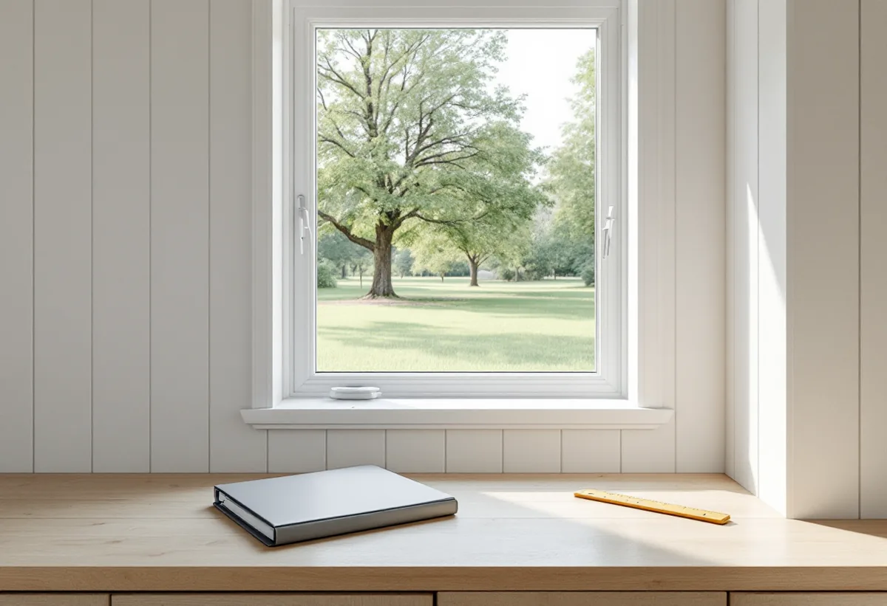

Användningen
Gäststuga eller bostad att hyra ut – det styr kraven.
Ska det lilla huset på tomten bli en gäststuga för sommaren eller en bostad att hyra ut året runt? I Österåker är det en fråga om både krav och lov. Geal Entreprenad AB bygger komplementbostadshus nyckelfärdigt och tar reda på vad som gäller för tomten innan vi ritar.

Österåkers kommun skiljer tydligt på de två. En komplementbyggnad, till exempel ett förråd, ett garage eller en gäststuga, får inte inredas till bostad. Ett komplementbostadshus är en fullt utrustad bostad som får byggas som komplement till ett en- eller tvåbostadshus. Det får hyras ut, men bara om byggnaden uppfyller Boverkets regler och kraven på en bostad och inte ger för stor omgivningspåverkan. Kommunen nämner tillgänglighet, ventilation och energiförbrukning.
Kommunen sammanfattar konsekvensen kort: du kan inte bygga en gäststuga och hyra ut den som bostad. Därför börjar vi med frågan om vad huset ska användas för. Ska det hyras ut ritar vi det som en bostad från början, med kök, badrum, ventilation och isolering, och anmäler installationerna för vatten, avlopp och ventilation enligt plan- och byggförordningen innan de görs.

Österåkers kommun har enligt sin egen sida fyra riksintressen för kulturmiljövården: Roslags-Kulla, Rydboholm, Vira bruk och Åkers kanal. Region Stockholm beskriver Åkers kanal (AB 62) som kanal- och farledsmiljö och Roslags-Kulla (AB 63) som herrgårdslandskap och sockencentrum. Runt Roslags-Kulla kyrka och Österåkers kyrka finns dessutom landskapsbildsskydd, och där kräver en ny byggnad dispens från Länsstyrelsen. Kommunen skriver att bygglov krävs om fastigheten ligger i ett kulturhistoriskt särskilt värdefullt område eller om byggnaden är särskilt värdefull, och det gäller även att bygga nytt.
Österåkerskartan visar områden med kulturhistoriska värden, och eftersom flera lagar skyddar dem kan kartan visa miljöer som överlappar varandra. I en detaljplan kan en byggnad ha skyddsbestämmelser. Kommunen förklarar att ett litet k betyder att byggnaden ska behandlas varsamt och ett litet q att den inte får rivas. Kommunen påpekar också att inte bara slott och äldre byggnader kan ha kulturvärden – även enkla, vardagliga byggnader och yngre bebyggelse kan ha det. I kommunens checklista finns frågor som vi går igenom vid platsbesöket: har detaljplanen skyddsbestämmelser för huset, ligger det i eller nära ett kulturmiljöområde, finns det med i en inventering eller ett kulturmiljöprogram och har det en bevarad, tidstypisk karaktär? Ett ja på någon av frågorna kan betyda att huset är värdefullt.
En del av kommunens checklista för värdefulla hus handlar om marken: finns det fornlämningar på tomten? Kommunen skriver att det inte behöver betyda att huset är särskilt värdefullt, men att platsen kan ha en lång historia och behöva undersökas. Riksantikvarieämbetets karta Fornsök visar fornlämningarna, och vill du bygga något på en tomt med fornlämningar behöver du söka tillstånd hos Länsstyrelsen. Kommunen ger en pool som exempel, och vår bedömning är att samma fråga behöver ställas inför grunden till ett nytt hus.
När en fastighet berörs av kulturvärden föreslår kommunen att du anlitar en expert på kulturmiljö, till exempel en antikvarie, som kan ge råd om hur påverkan på kulturvärdena kan minskas. Vi kontrollerar Fornsök och Österåkerskartan när vi mäter upp tomten, så att placeringen kan anpassas innan ritningarna är klara.
Kommunen skriver att den inte granskar dina byggplaner innan du börjar när åtgärden är lovfri, och att du själv ansvarar för att bygget följer reglerna. Bygger du fel kan kommunen ingripa i efterhand med tillsyn, och det kan innebära en byggsanktionsavgift eller att det byggda måste rivas. Söker du frivilligt bygglov prövar kommunen i stället om huset ryms inom kraven för de lovfria åtgärderna och lämnar ett beslut.
Kommunen har också checklistor över vilka ritningar som ska skickas in för en ny komplementbyggnad eller ett nytt komplementbostadshus. Ligger tomten inom strandskydd måste du enligt kommunen oftast söka dispens även när huset inte kräver bygglov, och nära Roslagsbanan gäller 30-meterszonen. Om grannmedgivanden och utstakning finns mer under tillbyggnad i Österåker, om bryggor och äldre hus under snickare i Österåker och om mått och paragrafer i reglerna för attefallshus.

Gäststuga eller bostad att hyra ut – det styr kraven.
Österåkerskartan, detaljplanen och Fornsök för just din tomt.
Lovfritt, frivilligt bygglov eller bygglov.
Enligt kommunens checklista och anmälan för installationer.
Grund, stomme, installationer och ytskikt – nyckelfärdigt.
Genomgång och handlingar att spara inför eventuell tillsyn.
Skatteverket räknar att bygga ett helt nytt hus eller en liknande fristående byggnad till arbeten som inte ger rotavdrag, och inte heller att anlita en arkitekt, en besiktningsman eller liknande. Ett komplementbostadshus är nybyggnad, så både projektering och bygge ligger utan avdrag i vårt kostnadsförslag.
Om huset ska vara gäststuga eller bostad, storlek och standard, grundläggning, avstånd till ledningar och om kulturvärden eller fornlämningar påverkar placering och utförande. Efter ett kostnadsfritt platsbesök får du ett skriftligt kostnadsförslag.
Komplementbostadshus på tomten.
Attefallshus →Takbyte, takbesiktning och plåtarbeten.
Takläggare i Österåker →Svinninge, sommarvillor och sportstugor.
Takrenovering i Österåker →VA-utbyggnad, öar och vattensmarta val.
Badrumsrenovering i Österåker →Rivning, markarbete och gatukostnader.
Byggföretag i Österåker →Skärgårdshus, fritidshus och villor i Österåker.
Fasadrenovering i Österåker →Varsamhet, kulturvärden och kustlägen i Österåker.
Fönsterbyte i Österåker →Sommarvillorna i Svinninge.
Fönsterrenovering i Österåker →Jämna golv och färre trösklar.
Golvläggare i Österåker →Golv i sommarhus som blivit bostad.
Golvslipning i Österåker →Helårshus, brunn och avlopp.
Köksrenovering i Österåker →Sommarvillor, röda stugor och efterkrigsvillor.
Målare i Österåker →Bryggor, altaner och äldre snickerier.
Snickare i Österåker →Lertegel, lovfrågan och återbruk av pannor.
Takbyte i Österåker →Sommarvillan blir åretruntbostad.
Tapetsering i Österåker →Grannmedgivande, strandskydd och utstakning.
Tillbyggnad i Österåker →Fritidshuset, värmen och anmälan.
Totalrenovering i Österåker →